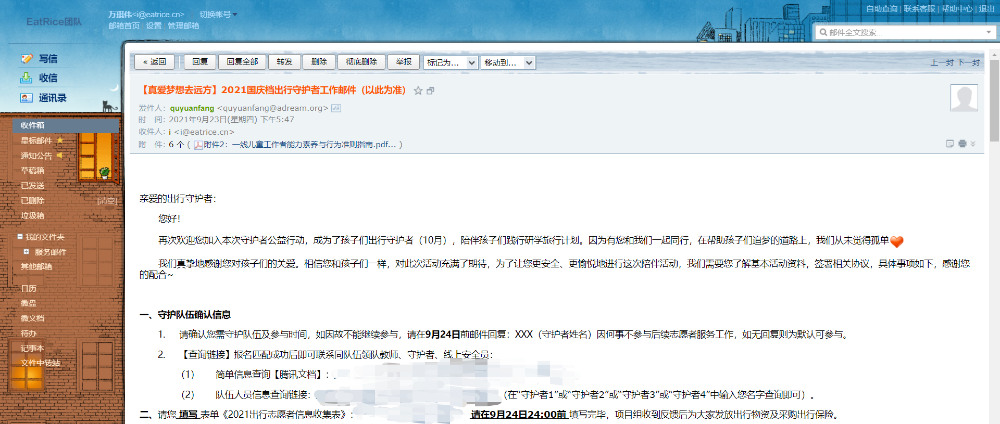
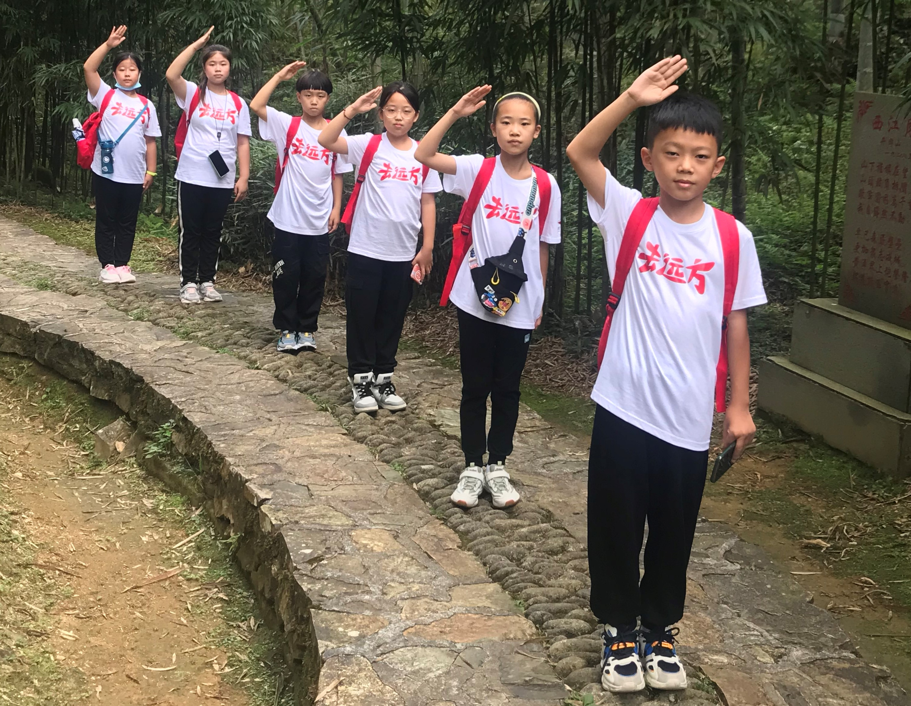
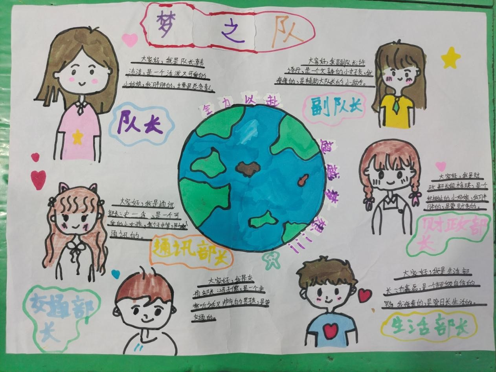

真爱梦想-南昌站-梦之队
本文最后更新于：3 天前
绪论
人与人相遇不是偶然，而是命运注定，世界太大，能相遇是缘分。某个晚上，在支付宝的三小时公益平台上看到了上海真爱梦想基金会的去远方研学活动，于是发了一封邮件前往咨询。一周后不负期待，邮件中让我走报名程序，程序框图如图一：
但是我好像只填好了笔试的报名表，都没有接到过面试的电话，就收到了成功录取为志愿者的邮件（真不错！）。本来研学活动一般在暑假的7月和8月开展，由于今年8月疫情突然升温，原计划的很多行程都去不了啦，8月份的大部分队伍都都改到了10月国庆期间，因此我的邮箱中也收到了延期通知。邻近10月，终于终于盼来了基金会的焯怡姐姐给我带来了新的消息。本想讨价还价和焯怡姐姐商量去守护北京的队伍，但似乎我的小心思被识破了，我匹配到了来自山西运城的“梦之队”，他们的主题是“回首革命岁月 学好百年党史 传承红色记忆”，目的地是井冈山-南昌。老师和小朋友们29号就出发了，30号到达井冈山——2号回到南昌，而我30号晚上有一节课，1号前往井冈山只能下午到，二号上午还得回来。所以我和老师商量，最后我就留在南昌在2号去火车站接小朋友们。

梦之队
话不多说，先上图！

梦之队有6位小朋友，山西运城，关公故里。他们告诉我运城是一个盆地，里面有关帝庙和李家大院，还有“欲穷千里目，更上一层楼”的鹳雀楼。介绍完了小朋友们的家乡，接下来介绍小朋友们😁😁😁
上图梦之队的排头兵，他叫冯子儒，是我们团队的交通部长，负责制定梦之队的出行方案。听老师说，在井冈山那几天冯子儒很好地充当了导航小能手，每次都能在其他小伙伴们的协助下，找到要去的目的地。他是一个很热情主动的小男孩儿，而且大家给他送了一个外号，叫做小暖男！一开始我问史一含，为什么大家都叫他小暖男，史一含和许译丹都没答上来；然后我又问冯子儒他自己，说大家怎么都叫你小暖男啊，冯子儒挠了挠头，咧开嘴露出一口小白牙朝着我们笑。冯子儒很喜欢我，1号晚上，他们即将结束井冈山的旅行，冯子儒第一个在梦之队的群里找到并添加了我作为微信好友。第二天我们出发前往八一广场的时候，我们走成一列长长的队伍，冯子儒一直跟在我的旁边，和我说话。第一天晚上从滕王阁回来之后，冯子儒和一个小大人一样，问我有没有到学校啊，问我有没有睡觉啊，还一大早起来问我有没有起床呀😊😊😊。第一天晚上，子儒将近11点叫我帮他做一个和我微信头像一样的卡通头像，我帮他做好了，然后和他说不早早睡觉明天打你屁股，但是第二天我忘记了，记起来的时候舍不得了。临别的时候和我说，下次再见面的时候为我量身定做一个小熊猫玩偶，还有下次逛街出门玩儿一定要拉子儒的手！
第二位小朋友叫许译丹，是我们团队的副队长，负责协助队长的协调工作。许译丹是女孩子，但是性格和表现上很像男孩子，就连小丹的的自拍照片转成动漫照片也是男孩子😁😁😁。第一天下午，我在老师的房间里面和老师聊天的时候，小丹经过老师房间的门口，然后挥手和我打招呼，过一会儿之后，小丹又溜到老师房间的门口，冲我挥手还做了一个鬼脸🤡🤡🤡。小丹好像很喜欢听我讲故事，我们出门的时候或者是去博物馆的时候总是会走到我的身边，听我胡说八道的讲解。第一天晚上在滕王阁和第二天晚上我们去万寿宫的时候，那里有很多人，小丹会凑到我身边拉着我防止我们走散。小丹身为副队长，她也十分尽职她的工作，第二天晚上我是和冯子儒和乔鑫磊两位小朋友挤了一晚上（冯子儒的睡觉会转圈圈），就看到许译丹很尽责地督促他们俩完成今天的复盘和统计工作。
第三位小朋友叫史一含，是我们团队的通讯部长，负责撰写梦之队的出行日记和随笔，文笔很好（我看了小含写的美篇，真不错！安利一篇刚发表的：传承红色精神，做新时代好少年）。史一含小朋友好热情哦，一直叫我琪伟哥哥，之前还没有被小朋友们这么叫过😊😊😊，第一天下午，我和老师在房间聊天的时候，她和许译丹一样在我们门口做鬼脸，小含胖胖的脸加上肉嘟嘟的小手，可爱极了。第一下午，小朋友们吃完方便面后（刚下火车安顿好，然后小朋友们也特别想吃泡面），我们一起开一个见面会，老师给我们相互介绍。当时6位小朋友们站成一排，小含站在最右边离我最近，当时老师在给我们讲各种注意事项和要求，老师不停地在说，小含就一直盯着我看。头一回被小朋友直勾勾的眼神盯着，还看了好久，看的我感觉真害羞。。。又不好意思打断老师说话去问她，之后我问小含，为啥那个时候一直盯着我看啊，她说我长得好像她认识的一位朋友，巧了，我也觉得她好像我认识的一位朋友。第一天晚上，我们参观完滕王阁，想找一个地方吃饭。在找餐馆的路上，小含一直走在我旁边和我说话，她向我介绍了她的家乡————山西运城，说到运城的特色是关帝庙和李家大院。我问小含李家大院为什么会那么出名，她说因为房子的主人由行善而出名，使得李家大院成为了一个著名的景点。小含喜欢吃醋，据内部可靠消息报道（冯子儒小朋友），小含吃饭时候的吃醋量是用碗来计数的！4号早上我们在火车站附近的餐馆吃早饭，小含点了一碗面条，然后我就看到她抓起醋瓶子就哗啦哗啦倒碗里。。。再据可靠消息（冯子儒和乔鑫磊），在战斗力方面小含是他们班上的大姐头，合他们俩之力都打不过。但是这两天在我的面前小含十分热情和细腻，时不时地叫我琪伟哥哥😊😊😊，我们坐地铁时还会主动帮我拿车票，好温柔哦~~~会不会我认识的小含和他俩认识的小含是不是同一个？小含在拍照的时候特别喜欢剪刀手的姿势，不管是空手还是戴手套，不管是只拍手还是拍全身照，我存下的照片里全都有肉嘟嘟的小剪刀。我给梦之队的小朋友们的微信备注是名字+梦之队，小含看到了强烈要求改成史一含大美女，我说小朋友可不能叫大美女，就改成小美女吧，小含说梦之队也去掉，现在小含在我的微信梦之队里有独一无二的称号啦。第二天晚上我们一起吃完KFC回到酒店，小含在她的朋友圈里面说有我的陪伴她很开心，其实和你们一起旅行我也很开心，感谢小含对我的信任，要是有机会去了运城第一件事情就是去瞧你！
第四位小朋友叫乔鑫磊，是我们团队的生活部长，负责统计我们的餐饮伙食和零食的支出。小鑫在他的自我介绍里面说自己超有自信，在我们两天的旅程中我也感觉到了他的满满自信。3号我们前往江西省博物馆，大家一起在休息区吃面具雪糕，当时我们忘记拍那个青铜面具了，我想回去拍一下，然后出来找入口。小鑫直接站出来说，我们直接从出口进去，然后就就领着我跑了进去。从这件事上我看到了小鑫的果断和勇敢，但是从出口进去不但违反规则而且是逆人流的，这里的人不是很多所以就没有阻止，我觉得如果小鑫下次行动前再加考虑一下，一定会成为一位很有执行力和魅力的男孩子。小鑫有时候也十分腼腆，会走在我身边一言不发，似乎是传染了我闷油瓶的性格。3号晚上我们去万寿宫，小鑫就一直凑在我身边拉着我的手，当听到我说项目组同意了我今晚和他们一起住的时候就蹦蹦跳跳的，开心极了。我们晚上回到酒店，小鑫回酒店的第一件事就是在大床上玩蹦床。他也是一个十分负责人的男孩子，履行职责的时候会一丝不苟地完成，比如付钱的时候精心计算，记录账单的时候一丝不苟。在游览滕王阁的时候，我们在楼上看到了一个滕王阁的三维投影模型，模型展示了滕王阁的兴建，破坏和修复的历史。小鑫对这个投影图像模型十分感兴趣，问我这个是怎么做到的，我当时告诉小鑫，这项3D投影技术是基于光的波粒二象性中衍射和干涉效应实现的，然后讲了光通过狭缝会产生明暗条纹的现象。也不知道技术原理有没有讲对，小鑫后面可以自己查一查相关的资料，然后我们再一起讨论一下。临走的时候小含和我说小鑫哭了，我也特别喜欢小鑫，期待下次见面！
第五位小朋友叫韩沛洁，是我们团队的队长，负责我们团队的协调和带头工作。我们吃饭，游玩和地铁的买票和报销开票都是她负责的，很厉害。韩沛洁很喜欢摄影，日常也很文静，像一个淑女，内心十分细腻。她喜欢把她的照片发到朋友圈，在她看来，一日三顿每一顿都是美好和快乐的。沛洁的个性中既有小朋友们喜欢开玩笑的调皮因子，又有沉着团结的队长气质。3号的时候和室友梓琪闹了矛盾，很快就抱着和解的态度来和梓琪沟通，最终经过老师的一番调解，她们俩又和好如初。沛洁说自己喜欢和朋友开玩笑，但是在两天的旅行中，沛洁一直都是文文静静的，相处的时间还是太短啦，都没有来得及深入了解你们。我们在参观博物馆和纪念馆的时候，沛洁都很认真地在看标签上和墙壁上的介绍，我在胡说八道胡乱讲解的时候也能看到沛洁在旁边听的头头似道（点点头表示自己好像知道了）。上大巴之后，我和沛洁说到家了告诉我一下，但好像沛洁似乎忘记了。。。
断后压轴的小朋友叫侯梓琪，是财政部长，负责管理我们行程中的支出。梓琪在我面前也是比较文静和腼腆的，但是和其他小朋友就很能放开。梓琪比较敏感，对沛洁玩笑和老师的批评很容易就哭鼻子，但是也很豁达和包容，她和沛洁闹矛盾了矛盾总是不过30分钟就能和好。梓琪喜欢土拨鼠，3号我们在博物馆一起吃午饭的时候，我问大家长大以后想做什么呀，小含告诉我说长大了想成为一名考古学家，小丹说想成为一名航天员，梓琪说想成为土拨鼠。。。沛洁、子儒和鑫磊还没有想好。我猜梓琪会成为一名美食家，沛洁会成为一名摄影师，鑫磊会成为一名物理学家，子儒会成为一名运动员😁😁😁。临走的时候，我和子儒说我去献血啦，然后梓琪就打电话过来问我，真是一个体贴的小姑娘。

去远方
10.02
2号下午，我去南昌火车站与老师成功会师，还没见到小朋友们就收到了小朋友们给的礼物——两袋山楂软糕❤❤❤。我有一点脸盲，看到了脸但是认不出来，我怕到时候碰见小朋友了他们自我介绍了一遍之后我还是记不住，于是就向老师要了他们的照片提前预习一下。结果到了酒店见到了他们的时候还是有两位小朋友的名字给搞混了，但是小朋友们表现出很惊讶的样子，问我为什么会还没见过他们就知道他们的名字。我想说我有未卜先知大法，但想想还是不要宣扬迷信，就告诉他们老师提前发过他们的照片给我，我对着记了好几遍。但是老师发给我的照片是带着口罩的照片，两个小男孩儿戴着帽子和口罩就长得一模一样，真是好难分辨。。。老师说，小朋友们想吃方便面了，于是大家中午就都一起吃方便面，我还辅助老师帮小朋友们烧水。

我们下午前往了八一广场，在八一纪念碑下面合影，这时候的小朋友们是欢欣雀跃，精力充沛的。接着我们坐地铁前往滕王阁，身为南昌人，这竟然也是我第一次前往滕王阁。我和小朋友们说，滕王阁至今有这么大的名气是因为他们高中要学一篇文章叫做《滕王阁序》，这时候老师来插一句：滕王阁序的作者王勃是山西运城人，顿时肃然起敬，没想还是关公和王勃的老乡。山西运城还有一座“鹳雀楼”和滕王阁差不多，都是被一首诗给捧红的，远在一千五百年前的唐朝诗人们可想不到他们的一首诗成就了一项产业。
从滕王阁出来，就到晚上了，我们到处寻觅吃饭的地方，老师建议我们晚上看《寻梦滕王阁》表演，但是由于我们在外面兜了一个大圈子但还是没找到饭店（我的一个大失误，没有提前找好吃饭的地方），寻梦滕王阁已经看不了，小朋友们也累了。小朋友们打算回去在火车站旁边吃KFC，于是我们往地铁站走，一路上我和小含、小丹、子儒和小鑫他们在讨论山西的美食与南昌美食的区别。山西主吃面食，南昌主吃大米和米粉。小丹说，在山西早上吃馒头，中午才会吃米粉。子儒说，早上有时候还会吃米汤。正好我们转过一个小巷子，有一家南昌特色餐馆，首先我们点了一份炒粉和一份瓦罐汤，让小朋友们感受一下南昌特色。结果菜上齐之后小朋友们都先把花甲给吃完了，米粉和瓦罐汤都没吃完，可能还是比较挑食。还好小含说瓦罐汤最好吃了，要不真得给南昌特色捏一把汗。
10.03
3号一大早，小鑫和子儒就向我提供叫醒服务，我刷好牙洗好脸就听到手机嘀嘀嘀。老师说小朋友们起的都比较晚，所以就不吃早饭打车去江西省博物馆直接到门口；我从学校出发，距离地铁站1公里左右，地铁坐5站，步行1公里左右到博物馆。没想到小朋友们和老师们先到一步。路上我们路过中学，在门口的流动摊位买了早餐（第二个失误，要求必须到有安全许可的摊位购买食物，但是附近找不到餐馆）。早餐是蒸饺，我早上也怕迟到，所以就在食堂买了四个鸡蛋（平时的早餐）揣兜里，准备路上吃。发现小朋友们也没吃饭于是都分给小朋友们吃了，早知道应该再多买两个鸡蛋的。
来博物馆的前一天晚上我做了一些功课，以便第二天可以给小朋友们胡说八道，但是小朋友们好像对那些古代物件不是很感兴趣，只有小含愿意听我胡扯。博物馆有古代的挖矿模型，上面展示了地下工程的矿洞支护方案，然后我向小朋友们介绍我的专业——岩土工程，研究岩石和泥巴，包括在地面上挖坑，在地底下打洞，真有点像土拨鼠。沛洁对建筑模型十分感兴趣，博物馆有一座故宫博物院的太和殿模型，还有一座天坛祈年殿的模型，她拍了一些美美的照片发到朋友圈。我向小朋友们解释了一下木建筑的卯榫结构，小朋友们纷纷表示对这种模型十分感兴趣。我觉得小朋友们回家后可以购买这种模型拼装玩儿，可以锻炼动手能力和加深对木建筑的结构理解。
逛完博物馆，小朋友们都让我帮他们做我微信头像一样的动漫头像，于是我们就在休息区休息了半个小时。期间小朋友们把头像都换成了和我一样的，然后小含还把我拉进了他们的小傻瓜群，封我为五傻子。。。中午我们就在博物馆里面吃了午饭，每位小朋友四个菜一个汤一盒牛奶或者橘子。我问小朋友们长大以后都想做什么啊，小朋友们好像都没有想好，只有小含和小丹有比较明确的目标，最后我们这个话题就以梓琪的土拨鼠结束。大家吃完饭的兴致很高，我和老师商量修改下午的计划，晚点去胜利路步行街，先去雕塑广场和南昌舰。
雕塑广场是一系列军人的雕塑集群，里面有扛着枪的士兵，还有正在冲锋的战士，还有一艘很大的渡江战役船模型。小朋友们在此处稍作停留，一起拍了一段梦之队视频。
接着我们去了南昌舰，小朋友们都渴死了，我们在门口买了一些水和饮料，顶着大太阳去舰上玩儿。南昌舰是锚固在岸边的，小朋友们趴在船舷上看，然后问：“哥哥，为什么我感觉船在动呀！”。我说是水在流动，我们站在穿上看水，附近又没有其他的参照物，所以我们就会有一种船在水面上航行的感觉。如果我们到另一侧有岸的地方看水的话，那么看船就不动啦。船头总是一个拍照圣地，最经典的场面莫过于泰坦尼克号的拥抱了。不仅是梦之队的小朋友，还有很多其他的游客小朋友们也特别想在船头拍照，河边的丝丝凉风，背后的船舷旗帜，真是美如画！我们从船头回来，小朋友们都希望我们直接离开，但是我们只参观了船头，还有船尾没有去。老师询问我们想不想去船尾，小朋友们都不想去，我有点犹豫不决，但是小含就直接拉着我的手说：“我们去！”一句话霸气侧漏，一派豪侠气质。从这段经历我也获得了成长，优柔寡断只会让自己留有遗憾，想做什么就直接去做吧！
晚上，我们前往万寿宫，本来我想带小朋友们去我学校参观的，但由于防疫政策，同时我也请示了一下徐老师，我和小朋友都很不舍地放弃了这项计划。万寿宫里人山人海，但是文化韵味就要低一些了，我们前往万寿宫时走错了方向（第三个失误，没有提前调研万寿宫的的周边），没有找到预想的小吃街，也错过了大门的位置，使得多绕了一些路。路边摆满了各种小游戏的摊位，小含说想玩鱿鱼游戏，但是由于时间关系加上街上的人流太密集了，就没有允许玩路边的游戏。万寿宫中摆的各种雕像感觉缺乏地方特色，小朋友们和老师也没什么兴趣，万寿宫的实质没有它介绍的那样文雅。
从万寿宫出来，我们直奔地铁站，小朋友们想吃KFC，老师说最后一顿我们吃好一点，小朋友们说，耶！
吃完饭，我们回到酒店房间，小鑫高兴得蹦蹦跳跳。然后梓琪就哭着鼻子过来了，说沛洁喜欢开玩笑，被沛洁欺负了。然后沛洁也过来了，想过来和梓琪和好。我对小朋友的吵架一知半解，就尝试调解。但是我好像越调解越乱，一团毛线。于是我就把沛洁叫出来问关于梓琪的事，想了解一下梓琪。上面的梓琪的介绍大部分都是通过沛洁了解到的。她们是很好的闺蜜，调解的事情交给老师做应该更加专业。由于回来已经挺晚了，在结束所有的复盘工作之后，我就强迫子儒和小鑫丢掉手机赶紧睡觉了。小朋友的火气太旺了，睡着睡着半夜热醒，然后就看到子儒睡觉转了一个弯。。。
10.04
今天是最后一天，大家的兴致都不是很高。大家都没怎么说话，也很少了嬉笑打闹。我们上午去了南昌八一起义纪念馆，里面展览了八一起义的历史故事和一些实物模型。这一天我给小朋友们继续讲故事，他们的兴致也不高。有一次在讲解的时候，旁边有一个叔叔也凑过来听，讲完之后那位叔叔问我是不是小朋友们的老师，我说我是大学生志愿者，负责带小朋友们出来玩儿，然后他又问我是不是文科生，然后我说我是工科生，那位叔叔给小朋友们和我比了一个大拇指。
要走了，满是不舍。中午吃完饭之后，我跟着小朋友们一直上机场大巴，我看到小含在车上举着手机，不知道是不是在给我拍照，我给她比了两个大拇指的手势。在太阳底下站了一会儿，忍不住想哭了，和老师打了招呼，就离开了大巴车站。路上口罩都湿掉了，在火车站的商店里面换了一个。
在与老师和小朋友们两天的陪伴中，我也学到了很多关于友情，勇气和梦想的故事。我们相互学习、相互促进，这一段经历也将是我的小幸运。祝小朋友们在这次研学活动中收获成长，在勇气和梦想的道路上再次蜕变！记得在在不开心的时候大喊我们的口号：勇敢牛牛，不怕困难！

本博客所有文章除特别声明外，均采用 CC BY-SA 4.0 协议 ，转载请注明出处！